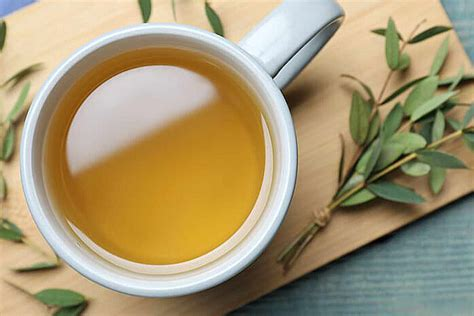

Infusión de Eucalipto
El eucalipto es conocido por sus propiedades descongestionantes y se utiliza comúnmente para tratar problemas respiratorios. Su aroma fresco y mentolado ayuda a abrir las vías respiratorias, lo que lo convierte en un remedio efectivo para aliviar la tos y la congestión.
Ingredientes:
- 5 hojas secas de eucalipto
- 1 taza de agua
Formas de utilizar:
-
Beber:
Preparación: Hervir el agua y agregar las hojas secas de eucalipto. Dejar reposar por 10 minutos y colar. Consumir la infusión caliente puede proporcionar alivio inmediato para la tos y ayudar a limpiar las vías respiratorias.
-
Inhalar:
Preparación: Inhalar el vapor de la infusión caliente. Esto ayuda a descongestionar las vías respiratorias y a reducir la inflamación, facilitando la respiración.